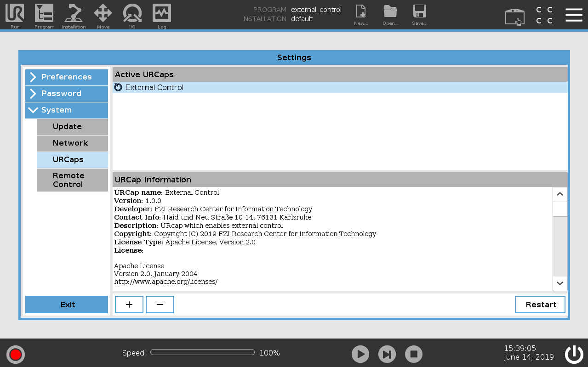
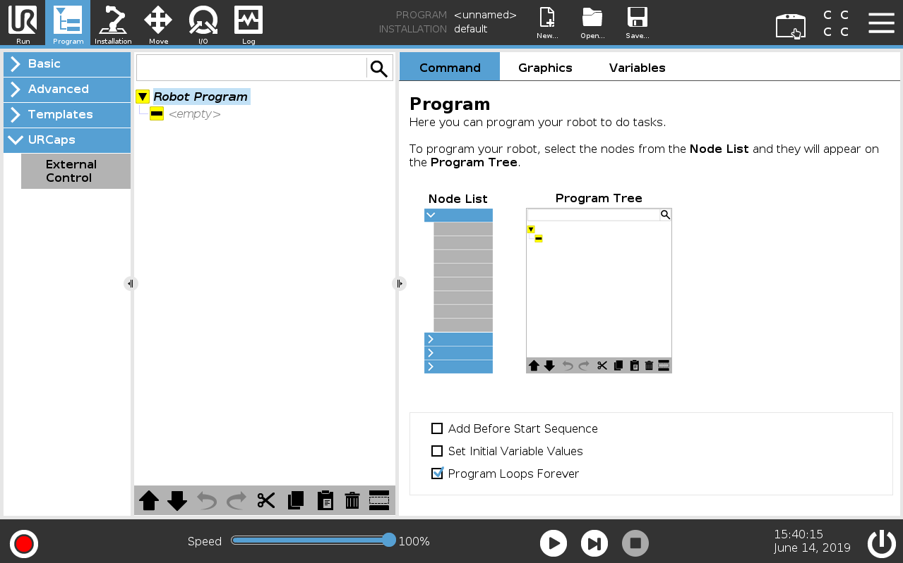
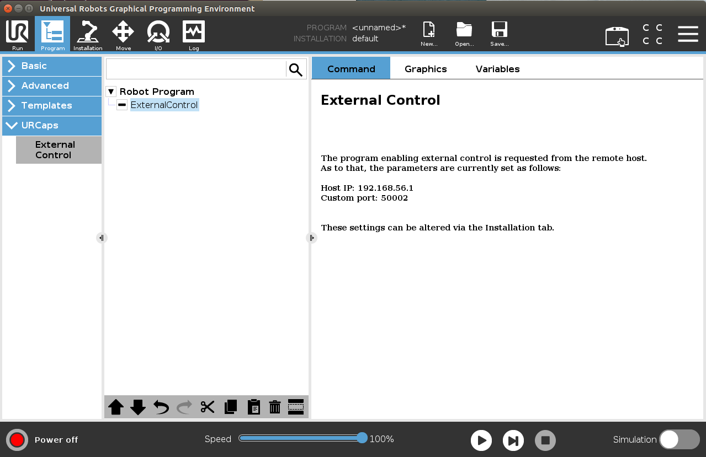

Installing a URCap on a e-Series robot
For using the ur_robot_driver with a real robot you need to install the externalcontrol-1.0.5.urcap which can be found inside the resources folder of this driver.
Note: For installing this URCap a minimal PolyScope version of 5.1 is necessary.
To install it you first have to copy it to the robot’s programs folder which can be done either via scp or using a USB stick.
On the welcome screen click on the hamburger menu in the top-right corner and select Settings to enter the robot’s setup. There select System and then URCaps to enter the URCaps installation screen.

There, click the little plus sign at the bottom to open the file selector. There you should see all urcap files stored inside the robot’s programs folder or a plugged USB drive. Select and open the externalcontrol-1.0.5.urcap file and click open. Your URCaps view should now show the External Control in the list of active URCaps and a notification to restart the robot. Do that now.
{kind=link}
After the reboot you should find the External Control URCaps inside the Installation section. For this select Program Robot on the welcome screen, select the Installation tab and select External Control from the list.

Here you’ll have to setup the IP address of the external PC which will be running the ROS driver. Note that the robot and the external PC have to be in the same network, ideally in a direct connection with each other to minimize network disturbances. The custom port should be left untouched for now.
{kind=link}
To use the new URCaps, create a new program and insert the External Control program node into the program tree
{kind=link}
If you click on the command tab again, you’ll see the settings entered inside the Installation. Check that they are correct, then save the program. Your robot is now ready to be used together with this driver.